An input picker is a widget that allows the user to interactively pick a choice using a popup or other guided selection method. The date picker is an input picker that allows the user to enter a date or choose a date from a calendar popup.
The basic syntax for the date picker is <input type="date">. Two common attributes for the date input are min (the earliest date permitted) and max (the latest date permitted).
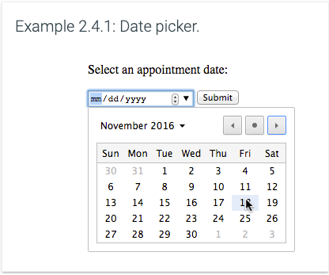
Clicking on the color picker creates a color selector popup that helps the user explore and choose a color.
The basic syntax for the color picker is <input type="color">.
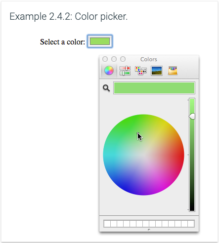
The number input ensures user input is a valid number.
The basic syntax for the number input is <input type="number">. The min and max attributes are commonly used with the number input.
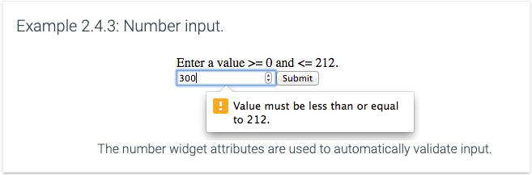
The range input widget allows the user to select a value by dragging a sliding control along the length of a line.
The basic syntax for the range input is <input type="range">. Three commonly used attributes for the range input are min, max, and value.
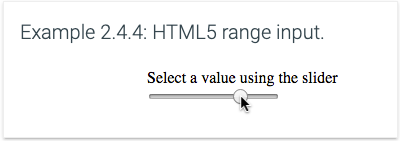
A combo box is the combination of a text box and drop-down menu into a single widget. A combo box is created with an <input> element, which creates the text box, and a <datalist> element, which provides the drop-down list options.
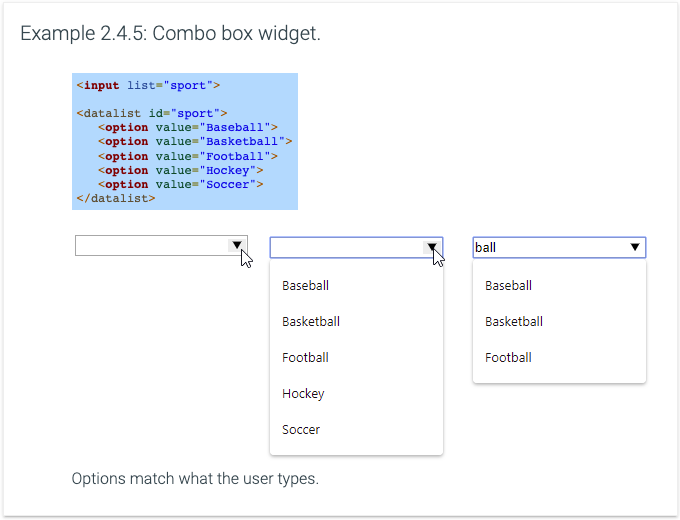
Four input types exist for entering specific types of text:
Most mobile browsers display keyboards configured for entering the input type.
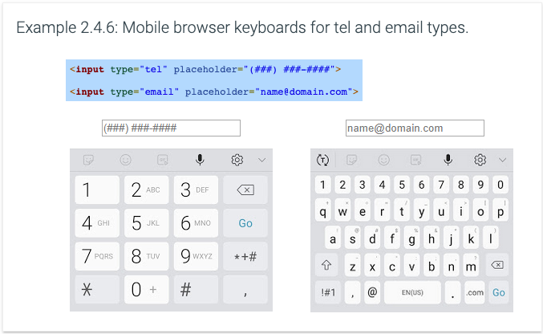
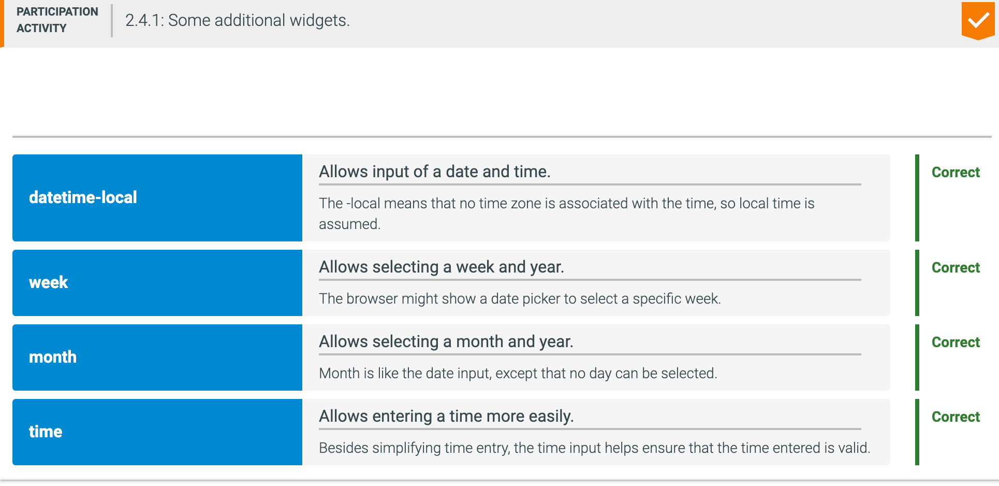
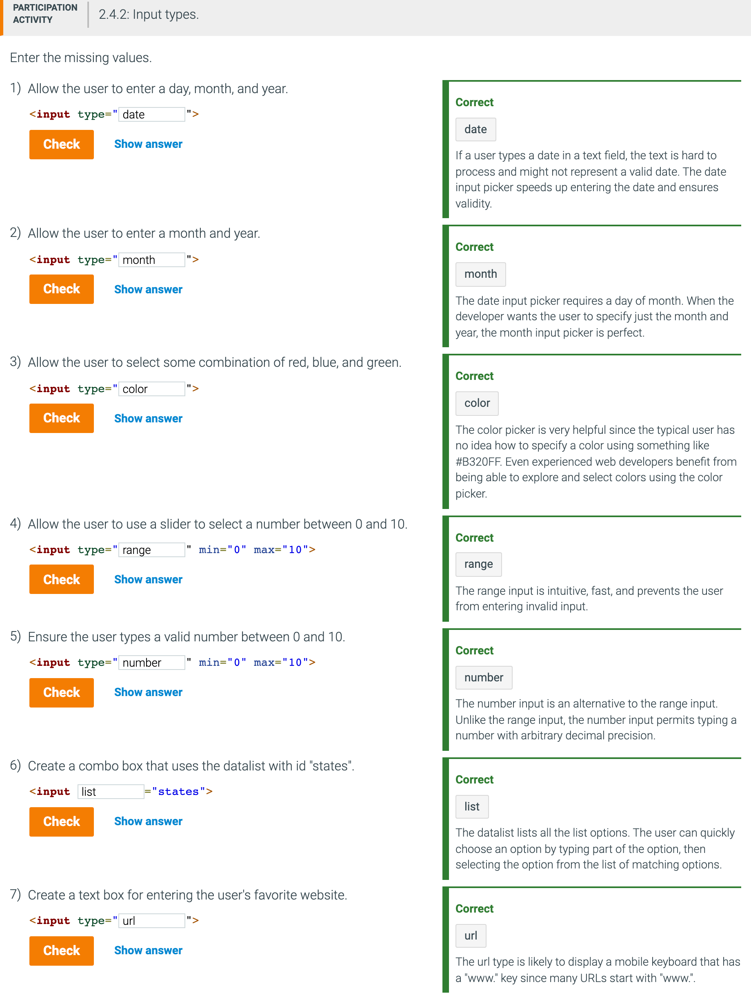
Input attributes that restrict user input are listed in the table below.
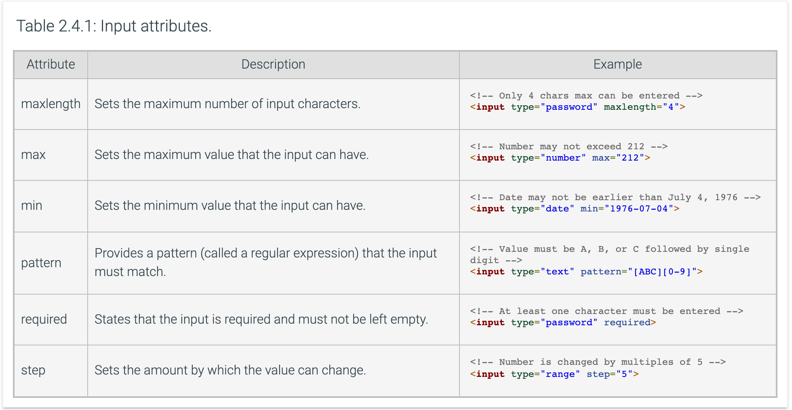
Not all widgets and attributes are fully supported by all browsers. Ex: Older browsers may not show a color input picker, so users must instead enter a hex string representing the red, green, and blue values of the color, like #4268D3, into a text input field.
A fallback is a mechanism that allows a web page element to function correctly even if the browser does not support a particular element. Good practice is to implement a fallback mechanism if a particular widget is not widely supported by browsers at the time.
A polyfill is a fallback using JavaScript code that makes certain HTML features (Ex: the date picker) work on browsers that do not natively support those features. Developers often use a JavaScript library such as Modernizr to detect which features the browser does not support, and then load one or more polyfills to provide fallback mechanisms for the non-supported features.
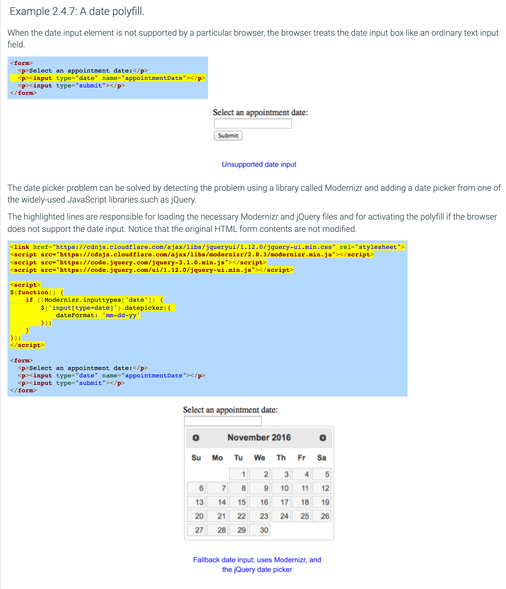
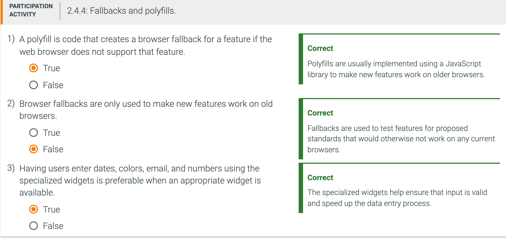